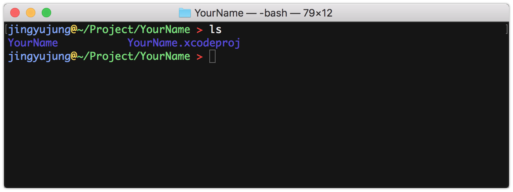

iOS 프로젝트에 cocoapods 적용하기
2018-04-16
-읽음
Cocoapods?
iOS 앱을 개발하면서 외부 라이브러리의 필요성을 느끼게 되고, 여러 라이브러리를 사용하다보면 서로 의존성이 꼬이는 문제가 발생할 수 있다.이런 문제를 해결하기 위해 자바에서는 Maven이나 Gradle등의 의존성 관리 툴을 사용한다.
iOS 생태계에도 감사하게 CocoaPods이라는 의존성 관리 툴이 있다.
CocoaPods 외에도 Carthage 라는 툴이 있지만, 사용해본 적 없고 사용중인 프로젝트를 본적이 아직 없다.
Cocoapods 설치
맥 사용자라면 일단 HomeBrew는 설치되어 있겠지!
아직 HomeBrew를 설치하지 않았다면?
1 | sudo gem install cocoapods |
터미널에 위 명령어를 입력하면 끝!
XCode 프로젝트에 적용하기
XCode 프로젝트 위치로 이동
터미널에서 XCode 프로젝트 위치로 이동한다

Podfile 생성
1 | pod init |
pod init 명령어를 통해 Podfile 을 생성한다.
이 Podfile은 이렇게 생겼다.
이제 사용할 pods 들을 넣는다. 네트워크를 위한 AFNetworking은 거의 필수고,
이번 프로젝트에는 RXSwift를 공부 해보고 싶어서 Podsfile 에 RXSwift를 넣었다.
이렇게 만들고 저장!!
Pods 설치
Podfile이 완성되었으면 아래 명령어로 Pods 들을 설치한다.
1 | pod install |
Pods 가 설치된다.
Pods가 모두 설치되고 나면 Podfile.lock, Pods, {프로젝트명}.xcworkspace 3개의 파일 또는 디렉토리가 생성된다.
- Podfile.lock : Pods 의 버전픽스를 위한 파일
- Pods : 라이브러리들이 다운로드 되는 디렉토리
- {프로젝트명}.xcworkspace : Pods를 사용할 수 있도록 포함된 워크스페이스 => 앞으로 이걸로 프로젝트를 열어야 한다
{프로젝트명}.xcworkspace 실행
Pod install 을 통해 생성된 워크스페이스를 실행한다.
왼쪽의 메뉴바를 보면 Pods 프로젝트와, 그 내부에 Pod 들이 설치된 것을 볼 수 있다.